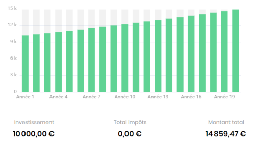
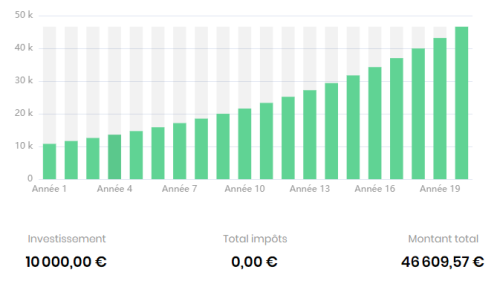

Comparatif des Gains : Livret A vs S&P 500
Simulation d’un investissement de 10 000 € sur les 20 dernières années, placé soit sur un Livret A, soit sur le S&P 500.
Livret A
Rendement lent mais sécurisé, taux moyen estimé autour de 2.4%/an.
S&P 500
Rendement plus élevé, mais avec des risques. Moyenne historique autour de 7 à 10%/an.
📊 Résumé des performances sur 20 ans
Si vous aviez placé 10 000 € sur un Livret A au taux légal fixe de 2,4 %, votre capital aurait atteint environ 16 100 € après 20 ans. Ce type de placement est garanti, sans risque de perte, mais il offre des rendements très modestes, souvent à peine supérieurs à l’inflation.
À l’inverse, un investissement de la même somme sur le S&P 500 — un indice composé des 500 plus grandes entreprises américaines — avec une performance moyenne de 8 % par an, aurait permis d’atteindre environ 46 600 €. Cela représente un gain presque trois fois supérieur, simplement en laissant le temps et les intérêts composés faire leur travail.
Bien entendu, investir en bourse comporte des risques : les marchés fluctuent, et certaines années peuvent être négatives. Cependant, l’histoire montre que sur le long terme, le marché américain a toujours progressé. C’est cette perspective à long terme qui permet de lisser les variations et de bénéficier de la croissance économique.
Ces graphiques soulignent donc une réalité simple mais puissante : pour faire croître votre épargne de manière significative, la patience et l'exposition à des actifs dynamiques peuvent faire toute la différence. Il ne s'agit pas d'opposer sécurité et rendement, mais de comprendre que chaque placement a un rôle à jouer selon vos objectifs et votre horizon de temps.